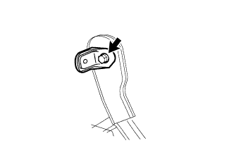
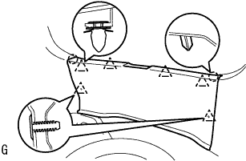

スライドドアハーフオープン ストッパASSY 取り付け |
| 1. スライドドアハーフオープン ストッパASSY仮締め |
 |
ナット2個でスライドドアハーフオープンストツパを仮締めする。
クランプ5箇所でケーブルを取り付ける。
| 2. スライドドアハーフオープンストッパ コントロールASSY取り付け |
ケーブルを接続する。
ツメのかん合を合わせ、スライドドアハーフオープンストツパコントロールASSYを室内側から取り付ける。
車両外側からナットを締付ける。
コネクタを接続する。
| 3. スライドドアハーフオープン ストッパASSY締め付け |
 |
図のように仮締めしたをナット2個をα→βの順で締め付ける。
| 4. デッキトリムサイド パネルASSY LH取り付け |
 |
クリップおよびツメをかん合させデツキトリムサイドパネルASSY LHを取り付ける。
| 5. リヤシートベルトASSY OUT LH取り付け（フロアアンカ部） |
ボルトでリヤシート 3ポイントタイプ ベルトASSY OUT LH（フロアアンカ部）を締め付ける。
| 6. リヤドア オープニングトリム ウェザストリップ LH取り付け |
ウェザストリップのペイントマーク(黄色および白色、どれか1箇所)とボデー側のウエザストリッツプ取り付け用切り欠き部(矢印部分)を合わせ、リヤドアオープニングトリムウエザストリップLHを取り付ける。

| 7. デッキサイドトリム カバー FR LH取り付け |
 |
車両後方に押し込みツメをかん合させ、デツキサイドトリムカバーFR LHを取り付ける。
| 8. フロントドアスカッフ プレート LH取り付け |
 |
フロントドアスカッフプレート LH前端部のツメを差し込む。
ツメおよびクリップををかん合させ、フロントドアスカッフプレートLHを取り付ける。
| 9. リヤシートバック ヒンジSUB-ASSY RH取り付け（リヤシート一体可倒式） |
 |
ボルトで、リヤシートバツクヒンジRHを締め付ける。
| 10. リヤシートバック ヒンジSUB-ASSY LH取り付け（リヤシート一体可倒式） |
ボルトで、リヤシートバツクヒンジLHを締め付ける。
| 11. リヤシートクッションASSY取り付け（リヤシート一体可倒式） |
リヤシートクッションASSY後部のフックをかん合させる。
リヤシートベルトを、リヤシートクッションカバー & パッド後部のゴムバンドに通す。
 |
リヤシートクッションASSY前部のフックをかん合させる。
| 12. リヤシートバックASSY取り付け（リヤシート一体可倒式） |
ボルト2本をでリヤシートバックASSYを取り付ける。
 |
クリップ2個を取り付ける。
| 13. リヤシートクッションASSY取り付け（可倒クッション跳ね上げ式） |
リヤシートクッションASSY前側をリヤシート クッション ロック ストライカにロックさせる。
リヤシートベルトを、リヤシートクッションカバー & パッド後部のゴムバンドに通す。
|  |
ボルトで、リヤシートヒンジLHを取り付ける。
リヤシートバックヒンジＲＨにスナップリングを取り付ける。
リヤシートヒンジRHを、リヤシートクッションASSY右側ブラケットの角パイプに挿入する。
| 14. リヤシートバックASSY LH取り付け（可倒クッション跳ね上げ式） |
ボルト2本でリヤシートバックを取り付ける。
 |
クリップ2個を取り付ける。
| 15. リヤシートバックASSY RH取り付け（可倒クッション跳ね上げ式） |
ボルト2本でリヤシートバックを取り付ける。
クリップ2個を取り付ける。
| 16. バックドアスカッフ プレート取り付け |
|  |
両端上部のツメ位置を合わせ、クリツプをかん合させてバツクドアスカツフプレートを取り付ける。
| 17. スペアホイール カバーASSY取り付け |
| 18. リヤフロア カーペット取り付け |
| 19. バックドア ウエザストリップ取り付け |
 |
ウェザストリップのペイントマーク(白色および緑色、どれか1箇所)とボデー側のウェザストリップ取り付け用切り欠き部(矢印部分)を合わせ、バックドアウェザストリップを取り付ける。